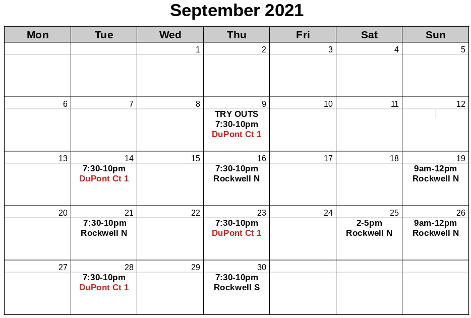
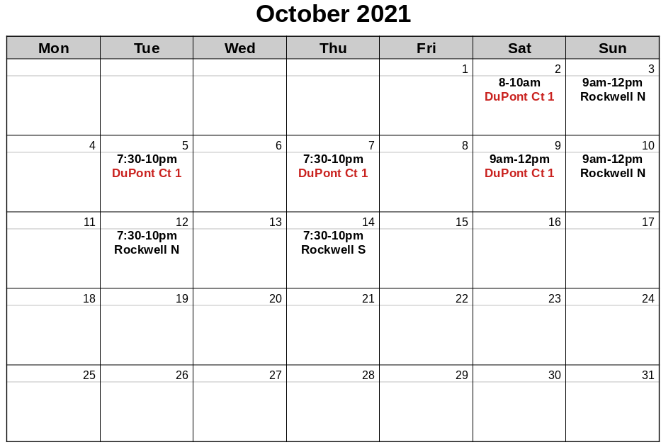

Below is the schedule for MIT Badminton club trainings and game nights. Typically, on Tuesdays, we will have an external coach provide hour-long group coachings to two groupings of players based on skill level. Groups are assigned by the officers and coach. On Thursdays and Saturdays, we typically have open game night for people to do drills or play as they wish. Members of our competitive team may also have additional invitation-only practices on Sundays. MIT Badminton court times are independent of the open rec court times that the Z-center offers, and only MIT club members (i.e. those that have filled out the online waiver and paid club dues) are eligible to use the MIT badminton club courts. If there are upcoming tournaments, the club may designate certain courts for club members who are competing.

